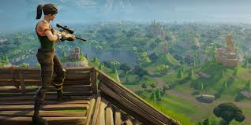
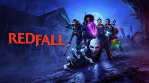
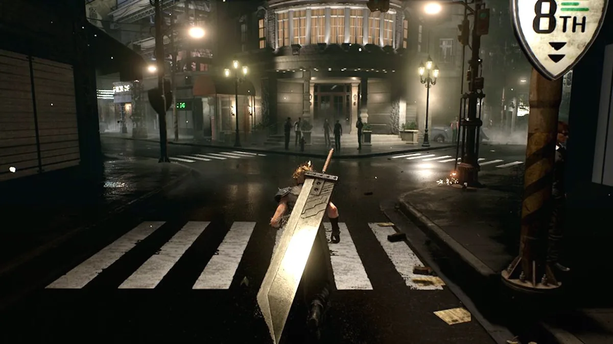
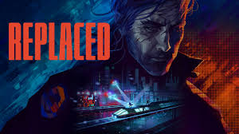
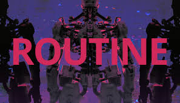
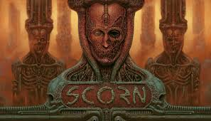

Fortnite

Fortnite, el popular battle royale de Epic Games, migró a Unreal Engine 5 para mejorar sus gráficos y rendimiento. Esta actualización ha permitido al juego alcanzar nuevos niveles de calidad visual y experiencia de juego.
Características implementadas con UE5:
- Nanite: Permite detalles geométricos increíbles en el mapa y los personajes.
- Lumen: Iluminación global dinámica que mejora la atmósfera del juego.
- World Partition: Permite un mapa más grande y detallado con mejor rendimiento.
- MetaSounds: Mejora la experiencia de audio con sonidos más inmersivos.
- Animación mejorada: Movimientos más fluidos y realistas para los personajes.
The Matrix Awakens

The Matrix Awakens es una experiencia técnica que muestra las capacidades fotorrealistas de Unreal Engine 5. Desarrollada en colaboración con los creadores de la saga Matrix, esta demo interactiva demuestra el potencial del motor para crear experiencias cinematográficas interactivas.
Aspectos destacados:
- Ciudad fotorrealista: Una metrópolis completamente explorable con detalles sin precedentes.
- Personajes virtuales: Recreaciones hiperrealistas de actores como Keanu Reeves y Carrie-Anne Moss.
- Física avanzada: Simulación de vehículos, destrucción y efectos ambientales.
- Transición fluida: Cambios perfectos entre secuencias cinematográficas y gameplay.
- Iluminación dinámica: Efectos de luz y sombras que cambian según la hora del día.
Senua's Saga: Hellblade II

Senua's Saga: Hellblade II es la secuela del aclamado juego de Ninja Theory con gráficos impresionantes gracias a UE5. Este título promete llevar la narrativa psicológica y la inmersión visual a un nuevo nivel.
Innovaciones técnicas:
- Captura de movimiento avanzada: Expresiones faciales y movimientos corporales ultrarrealistas.
- Audio binaural mejorado: Experiencia sonora 3D que complementa la narrativa psicológica.
- Entornos fotogramétricos: Escenarios escaneados del mundo real con detalle microscópico.
- Efectos atmosféricos: Niebla, partículas y efectos climáticos que afectan la jugabilidad.
- Renderizado de piel y cabello: Tecnología avanzada para representar personajes humanos realistas.
Black Myth: Wukong

Black Myth: Wukong es un RPG de acción basado en la mitología china con visuales espectaculares. Desarrollado por Game Science, este título ha captado la atención mundial por su impresionante calidad visual y su ambicioso alcance.
Elementos destacados:
- Combate fluido: Sistema de combate dinámico con transformaciones y habilidades mágicas.
- Criaturas mitológicas: Enemigos y jefes basados en la mitología china con diseños detallados.
- Efectos de partículas: Magia, fuego y otros efectos visuales que aprovechan el sistema Niagara de UE5.
- Vegetación densa: Bosques y entornos naturales con millones de elementos individuales.
- Física de telas: Simulación avanzada para vestimentas, banderas y elementos ambientales.
Otros juegos destacados

S.T.A.L.K.E.R. 2: Heart of Chornobyl
Secuela del clásico de supervivencia y horror que aprovecha UE5 para crear la Zona de Exclusión más inmersiva hasta la fecha.

Redfall
Shooter cooperativo de Arkane Studios que utiliza UE5 para crear un mundo abierto detallado infestado de vampiros.

Dragon Age: Dreadwolf
La nueva entrega de la saga RPG de BioWare que utiliza UE5 para crear un mundo de fantasía más vivo y detallado.
Juegos AAA en Unreal Engine 5
Estos son algunos de los títulos de gran presupuesto que aprovechan al máximo las capacidades de Unreal Engine 5.

Hogwarts Legacy (Avalanche Software)
Este RPG de mundo abierto ambientado en el universo de Harry Potter utiliza Unreal Engine 5 para recrear el Colegio Hogwarts y sus alrededores con un nivel de detalle sin precedentes, transportando a los jugadores al mundo mágico del siglo XIX.
Características destacadas:
- Castillo detallado: Recreación minuciosa de Hogwarts con cientos de habitaciones, pasadizos secretos y áreas explorables.
- Efectos mágicos: Hechizos y encantamientos con efectos visuales espectaculares gracias al sistema de partículas Niagara.
- Iluminación atmosférica: Lumen proporciona una iluminación dinámica que cambia según la hora del día y las condiciones climáticas.
- Criaturas fantásticas: Bestias mágicas detalladas con comportamientos realistas y animaciones fluidas.
- Entornos naturales: Bosques, lagos y montañas con vegetación densa y efectos atmosféricos inmersivos.

Final Fantasy VII Rebirth (Square Enix)
La segunda parte del remake de Final Fantasy VII utiliza Unreal Engine 5 para expandir el mundo de Gaia con entornos vastos y detallados, llevando la icónica historia de Cloud y sus compañeros a nuevas alturas visuales.
Innovaciones técnicas:
- Mundo abierto: Extensos paisajes explorables con transiciones fluidas gracias a World Partition.
- Personajes detallados: Modelos de personajes con expresiones faciales y animaciones ultrarrealistas.
- Efectos de magia: Hechizos y invocaciones con efectos visuales espectaculares y física realista.
- Cinemáticas interactivas: Secuencias narrativas que combinan perfectamente gameplay y momentos cinematográficos.
- Audio inmersivo: Sistema de audio espacial que aprovecha MetaSounds para una experiencia sonora envolvente.

Alan Wake 2 (Remedy Entertainment)
Esta secuela del aclamado thriller psicológico utiliza Unreal Engine 5 para crear una experiencia de terror survival horror con una atmósfera opresiva y un nivel de detalle visual sin precedentes.
Elementos destacados:
- Iluminación dinámica: Lumen permite crear ambientes oscuros con iluminación realista crucial para la jugabilidad basada en la luz.
- Efectos volumétricos: Niebla, humo y partículas que crean una atmósfera densa y opresiva.
- Entornos detallados: Escenarios con geometría compleja y texturas de alta resolución gracias a Nanite.
- Física de fluidos: Simulación realista de agua, sangre y otros líquidos que interactúan con el entorno.
- Animaciones faciales: Expresiones realistas que transmiten el terror y la tensión psicológica de los personajes.

ARK 2 (Studio Wildcard)
La secuela del popular juego de supervivencia con dinosaurios aprovecha Unreal Engine 5 para crear un mundo prehistórico más inmersivo y detallado, con Vin Diesel como protagonista y productor ejecutivo.
Características principales:
- Ecosistemas dinámicos: Entornos vivos con flora y fauna que interactúan entre sí de forma realista.
- Dinosaurios detallados: Criaturas con millones de polígonos, texturas de alta resolución y comportamientos avanzados.
- Destrucción procedural: Entornos destructibles que reaccionan de forma realista a las acciones de los jugadores y dinosaurios.
- Efectos climáticos: Sistemas meteorológicos dinámicos que afectan la jugabilidad y la supervivencia.
- Animaciones avanzadas: Movimientos fluidos y realistas tanto para personajes humanos como para criaturas prehistóricas.
Juegos de Terror y Supervivencia
Unreal Engine 5 permite crear atmósferas opresivas y entornos detallados perfectos para el género de terror.

Dead Space Remake (Motive Studio)
Esta reimaginación del clásico juego de terror espacial utiliza Unreal Engine 5 para llevar la experiencia original a un nuevo nivel de horror y realismo visual, manteniendo la esencia que hizo famosa a la franquicia.
Mejoras técnicas:
- Desmembramiento avanzado: Sistema de daño volumétrico que permite descomponer a los enemigos de forma realista.
- Iluminación atmosférica: Juego de luces y sombras que crea una atmósfera opresiva en la nave espacial USG Ishimura.
- Audio 3D: Sonido posicional que aumenta la tensión y la inmersión en el entorno espacial.
- Efectos de vacío: Simulación física realista de entornos sin gravedad y descompresiones.
- Texturas detalladas: Superficies metálicas, óxido y fluidos orgánicos con un nivel de detalle sin precedentes.

Silent Hill 2 Remake (Bloober Team)
El remake del aclamado clásico de terror psicológico utiliza Unreal Engine 5 para recrear el pueblo de Silent Hill con una atmósfera densa y perturbadora, respetando la esencia del original pero con gráficos de última generación.
Elementos destacados:
- Niebla volumétrica: La icónica niebla de Silent Hill recreada con efectos volumétricos avanzados que reaccionan a la luz y al movimiento.
- Iluminación expresiva: Uso de Lumen para crear ambientes inquietantes con sombras dinámicas y efectos de luz atmosféricos.
- Diseño de sonido: Audio espacial que aprovecha MetaSounds para crear una experiencia auditiva perturbadora.
- Animaciones faciales: Expresiones realistas que transmiten el trauma psicológico de los personajes.
- Efectos de distorsión: Transiciones entre la realidad y el mundo de pesadilla con efectos visuales impactantes.

The Callisto Protocol (Striking Distance Studios)
Creado por el diseñador de Dead Space, este juego de terror espacial utiliza Unreal Engine 5 para ofrecer una experiencia de horror visceral en una prisión de máxima seguridad ubicada en la luna de Júpiter, Calisto.
Características técnicas:
- Gore detallado: Sistema de daño y desmembramiento ultrarrealista con física de fluidos avanzada.
- Iluminación dinámica: Uso de Lumen para crear ambientes claustrofóbicos con sombras dinámicas.
- Animaciones contextuales: Interacciones entre personajes y enemigos con animaciones fluidas y realistas.
- Efectos de partículas: Sangre, vapor y otros efectos visuales que aumentan la inmersión y el horror.
- Audio posicional: Sonidos ambientales y de criaturas que ayudan a localizar amenazas en la oscuridad.
Juegos de Mundo Abierto
Unreal Engine 5 permite crear vastos mundos abiertos con un nivel de detalle sin precedentes gracias a tecnologías como World Partition y Nanite.

Elden Ring: Shadow of the Erdtree (FromSoftware)
La expansión del aclamado Elden Ring utiliza Unreal Engine 5 para crear nuevas regiones del Entretierra con un nivel de detalle y escala sin precedentes, manteniendo el estilo artístico distintivo de FromSoftware.
Innovaciones técnicas:
- Mundo interconectado: Vastas áreas con transiciones fluidas gracias a World Partition.
- Arquitectura detallada: Estructuras y ruinas con geometría compleja y texturas de alta resolución.
- Efectos atmosféricos: Niebla, lluvia y otros fenómenos meteorológicos que afectan la visibilidad y la jugabilidad.
- Iluminación dinámica: Ciclo día/noche con efectos de iluminación que transforman el paisaje.
- Enemigos detallados: Jefes y criaturas con diseños complejos y animaciones fluidas.

Dragon's Dogma 2 (Capcom)
Esta secuela del aclamado RPG de acción utiliza Unreal Engine 5 para crear un vasto mundo de fantasía con un sistema de combate dinámico y criaturas impresionantes que aprovechan las capacidades del motor.
Características destacadas:
- Criaturas gigantes: Dragones y otros monstruos enormes con geometría detallada y comportamientos complejos.
- Física de personajes: Sistema de escalada y agarre que permite a los jugadores trepar por enemigos gigantes.
- Entornos destructibles: Edificios y estructuras que pueden ser dañados durante los combates.
- Efectos climáticos: Tormentas, niebla y otros fenómenos atmosféricos que afectan la jugabilidad.
- Poblados vivos: Ciudades y aldeas con NPCs que siguen rutinas diarias y reaccionan a las acciones del jugador.

Assassin's Creed Shadows (Ubisoft)
La nueva entrega de la saga Assassin's Creed ambientada en el Japón feudal utiliza Unreal Engine 5 para recrear paisajes históricos con un nivel de detalle sin precedentes y un sistema de combate renovado.
Elementos técnicos:
- Recreación histórica: Ciudades y paisajes del Japón feudal con arquitectura y vegetación detalladas.
- Multitudes densas: Mercados y festivales con cientos de NPCs con comportamientos individuales.
- Efectos climáticos: Lluvia, nieve y cambios estacionales que afectan la jugabilidad y la estética.
- Combate fluido: Animaciones de combate realistas con katanas y otras armas tradicionales japonesas.
- Iluminación atmosférica: Amaneceres, atardeceres y escenas nocturnas con iluminación dinámica realista.
Juegos Independientes Destacados
Unreal Engine 5 no es exclusivo de grandes estudios; muchos desarrolladores independientes están creando experiencias innovadoras con este motor.

Replaced
Un juego de acción y plataformas 2.5D con estética cyberpunk que combina píxel art con efectos de iluminación avanzados de UE5.

Little Nightmares 3
La nueva entrega de esta serie de terror y puzles utiliza UE5 para crear ambientes inquietantes con iluminación y sombras dinámicas.

The Plucky Squire
Un juego de aventuras que combina 2D y 3D, donde el protagonista salta entre las páginas de un libro y el mundo real con efectos visuales impresionantes.

Layers of Fear
Reimaginación de la serie de terror psicológico que utiliza UE5 para crear entornos perturbadores con efectos visuales y sonoros inmersivos.

Routine
Un juego de terror de ciencia ficción ambientado en una estación espacial abandonada con estética retro-futurista y atmósfera opresiva.

Scorn
Una aventura de terror atmosférico con estética biomecánica inspirada en H.R. Giger que aprovecha UE5 para crear entornos orgánicos perturbadores.
Juegos de Carreras y Simulación
Unreal Engine 5 permite crear experiencias de conducción y simulación con un nivel de realismo visual y físico sin precedentes.

Test Drive Unlimited Solar Crown
Simulador de conducción de mundo abierto que recrea Hong Kong a escala 1:1 con detalles impresionantes gracias a Nanite y Lumen.

Gran Turismo 7
La nueva versión del simulador de conducción de PlayStation utiliza UE5 para mejorar los gráficos y la física de los vehículos.

Microsoft Flight Simulator 2024
La nueva versión del simulador de vuelo utiliza UE5 para mejorar los efectos atmosféricos, la iluminación y los detalles de los aviones.

F1 24
El simulador oficial de Fórmula 1 utiliza UE5 para recrear los circuitos y vehículos con un nivel de detalle fotorrealista.
Futuros juegos que podrían usar Unreal Engine 5
Estos son algunos de los títulos más esperados que podrían aprovechar el potencial de Unreal Engine 5 en el futuro.
.jpg)
Halo Infinite 2 (343 Industries)
Aunque no se ha confirmado oficialmente, hay rumores de que 343 Industries podría considerar migrar la franquicia Halo a Unreal Engine 5 para futuras entregas. Esto permitiría a la saga aprovechar las tecnologías de última generación para crear experiencias aún más inmersivas.
Posibles implementaciones con UE5:
- Nanite: Permitiría crear entornos alieníg
- Sistemas de IA avanzados: Criaturas y personajes con comportamientos más realistas.
.jpg)
Perfect Dark (The Initiative y Crystal Dynamics)
El reinicio de Perfect Dark está siendo desarrollado por The Initiative en colaboración con Crystal Dynamics. Aunque no se ha confirmado el motor, Unreal Engine 5 sería una opción ideal para este título de espionaje y ciencia ficción que busca redefinir la franquicia.
Beneficios potenciales de UE5:
- Iluminación avanzada: Perfecta para las misiones de sigilo nocturnas y los entornos futuristas.
- Efectos de partículas: Gadgets de alta tecnología con efectos visuales impresionantes.
- Audio espacial: Fundamental para la detección de enemigos en misiones de infiltración.
- Renderizado fotorrealista: Entornos corporativos y bases secretas con alto nivel de detalle.
- Animaciones fluidas: Movimientos acrobáticos y combate cuerpo a cuerpo realista.
.jpg)
Fable (Playground Games)
El nuevo reinicio de Fable está siendo desarrollado por Playground Games. Aunque inicialmente se rumoreaba que usaría el motor ForzaTech, existe la posibilidad de que el estudio opte por Unreal Engine 5 para crear su mundo de fantasía.
Ventajas de UE5 para un mundo de fantasía:
- Vegetación realista: Bosques y praderas con millones de elementos individuales.
- Sistemas de clima dinámico: Cambios atmosféricos que afectan al gameplay y la narrativa.
- Efectos mágicos: Hechizos y poderes con efectos visuales espectaculares.
- Poblados detallados: Ciudades medievales con arquitectura compleja y gran cantidad de NPCs.
- Sistemas de IA avanzados: Criaturas y personajes con comportamientos más realistas.
.jpg )
State of Decay 3 (Undead Labs)
La próxima entrega de la serie de supervivencia zombi de Undead Labs podría beneficiarse enormemente de las capacidades de Unreal Engine 5. El juego ya ha sido anunciado, pero los detalles técnicos aún no han sido revelados.
Mejoras potenciales con UE5:
- Simulación de hordas: Mayor cantidad de zombis en pantalla con comportamientos más complejos.
- Destrucción realista: Edificios y vehículos que se deterioran de forma realista.
- Ciclo día/noche: Iluminación dinámica que afecta a la jugabilidad y la tensión.
- Ecosistemas detallados: Fauna y flora que reaccionan al apocalipsis zombi.
- Efectos climáticos: Condiciones meteorológicas que afectan a la supervivencia.
.jpg)
Avowed (Obsidian Entertainment)
Este RPG en primera persona ambientado en el mundo de Eora (el mismo universo que Pillars of Eternity) podría utilizar Unreal Engine 5 para crear un mundo de fantasía inmersivo y detallado.
Características que aprovecharían UE5:
- Sistemas de magia: Hechizos con efectos visuales y físicos impresionantes.
- Entornos variados: Desde mazmorras oscuras hasta paisajes épicos con gran nivel de detalle.
- Combate dinámico: Animaciones fluidas para el combate con armas y magia.
- Iluminación atmosférica: Ambientes que transmiten la rica mitología del mundo.
- Renderizado de personajes: NPCs detallados con expresiones faciales realistas.
Más títulos que podrían adoptar UE5

Gears of War 6
The Coalition podría llevar la saga Gears a nuevos niveles visuales con UE5, mejorando la destrucción, los efectos de partículas y la calidad visual general.

Mass Effect 5
BioWare podría utilizar UE5 para el próximo capítulo de Mass Effect, creando planetas alienígenas fotorrealistas y personajes más expresivos.

Indiana Jones
El próximo juego de Indiana Jones de MachineGames podría beneficiarse de UE5 para recrear localizaciones históricas con un nivel de detalle arqueológico sin precedentes.